Evergreen — Procedures¶
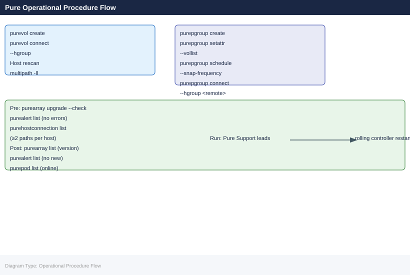
This page covers day-to-day operational procedures for arrays under an Evergreen subscription: change readiness, maintenance window management, controller upgrade coordination, capacity management, post-change validation, and subscription lifecycle tasks.
Before you begin¶
- Access: Storage admin credentials (cluster admin or equivalent)
- Timing: safe to run during business hours unless a step is marked ⚠ (causes interruption)
- Dependencies: no active upgrades or migrations on the same infrastructure
- Logging: capture command output — paste into the change record on completion
Change Readiness¶
Run this checklist before any planned change to an Evergreen FlashArray — Purity upgrade, controller refresh, volume provisioning, or replication reconfiguration.
Pre-Change Checklist¶
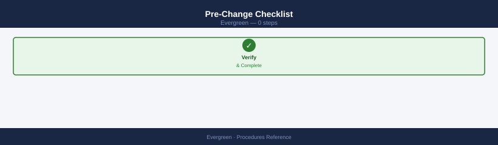
- [ ] No active drive rebuilds —
puredrive listshows all driveshealthy; no drives inevacuatingorrecoveringstate - [ ] No active critical alerts —
purealert list --severity errorreturns no results - [ ] Both controllers online —
purearray list --controllershows both CT0 and CT1 online running the same Purity version - [ ] All pods online —
purepod listshows all ActiveCluster pods inonlinestatus (if configured) - [ ] Mediator reachable —
curl -sk https://<mediator-ip>/mediator/versionreturns a version response (if ActiveCluster is deployed) - [ ] All hosts have redundant paths —
purehostconnection listshows no host with fewer than 2 paths; single-path hosts are an upgrade blocker - [ ] Replication lag within RPO —
purepod listshows lag within the defined RPO threshold - [ ] Capacity headroom sufficient —
purearray list --spaceshows at least 20% free before starting large provisioning changes - [ ] Snapshot count is manageable —
puresnap list | wc -lis below 10,000; high snapshot counts extend upgrade duration - [ ] Pure1 phonehome active — Pure1 portal shows phonehome as active for this array; Pure Support visibility requires continuous telemetry
- [ ] Change freeze status confirmed — no outstanding change freezes in the change management system
| Item | Status | Notes |
|---|---|---|
| No drive rebuilds | ||
| No critical alerts | ||
| Both controllers online | ||
| All pods online | ||
| Mediator reachable | ||
| All hosts multi-path | ||
| Replication lag within RPO | ||
| Capacity headroom > 20% | ||
| Phonehome active |
Purity Software Upgrade Procedure¶
Purity upgrades on Evergreen subscriptions are non-disruptive. Pure performs the upgrade — the customer's responsibility is to validate readiness and confirm the maintenance window. Follow this procedure for every upgrade.
Step 1 — Confirm Target Version and Path¶
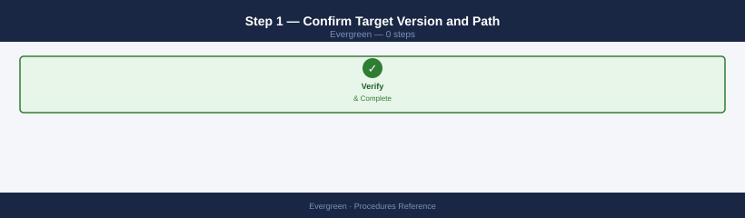
# Check current Purity version
purearray list
# Note the 'version' field
# Check upgrade readiness (non-disruptive upgrade pre-check)
purearray upgrade --check
# Output lists any blockers. All checks must pass before proceeding.
# If using the Python pre-check script:
export FA_HOST=flasharray01.example.com
export FA_API_TOKEN=<token>
python fa_upgrade_readiness.py
Name Version Model
flasharray01.example.com 6.4.2 FA-405
flasharray02.example.com 6.4.2 FA-405
Upgrade readiness check results:
✓ All nodes healthy
✓ No active snapshots blocking upgrade
✓ Sufficient free space (78% available)
✓ No ongoing replication jobs
✓ All controllers synchronized
✓ No pending firmware updates
Pre-check passed. System is ready for upgrade to 6.4.3.
FA Upgrade Readiness Check v2.1
Connected to: flasharray01.example.com
Array Serial: 5b8c4a2e-91f3-4d8a-b2c1-7e9f3a5d8c2b
Current Version: 6.4.2
Target Version: 6.4.3
Status: READY
Common errors
purearray: command not found — Install the Pure Storage CLI tools or add the installation directory to your PATH environment variable.
Error: Authentication failed. Invalid API token. — Verify the FA_API_TOKEN environment variable is set correctly and the token has not expired.
Error: Connection refused on flasharray01.example.com:443 — Confirm FA_HOST is reachable and the management IP is correct; check network connectivity and firewall rules.
Confirm the target version with Pure Support. Pure will specify the upgrade path — never skip more than two minor versions without Pure's guidance. Verify the target version is compatible with the current controller generation using the Pure compatibility matrix.
Step 2 — Pre-Upgrade Actions¶
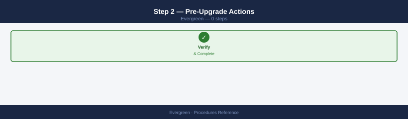
# Clean up destroyed volumes and snapshots to reduce upgrade duration
purevol eradicate --destroyed
puresnap eradicate --destroyed
# Record baseline capacity and data reduction before the upgrade
purearray list --space > /tmp/pre-upgrade-space-$(date +%Y%m%d).txt
# Record volume inventory
purevol list > /tmp/pre-upgrade-volumes-$(date +%Y%m%d).txt
# Notify application teams and storage consumers of the upgrade window
# FlashBlade upgrades are non-disruptive but protocol sessions may briefly re-establish
Eradicated 47 destroyed volumes
Eradicated 312 destroyed snapshots
Capacity (GB) Data Reduction Snapshots (GB) System (GB)
1048576 4.2x 102400 51200
Volume Name Size (GB) Provisioned (GB) Snapshots
prod-db-01 500 500 12
prod-db-02 750 750 8
prod-web-cache 200 200 3
prod-backup-01 1024 1024 156
dev-test-vol 100 100 2
...
Common errors
purevol: command not found — Ensure the Pure Storage CLI tools are installed and the PATH includes the Pure bin directory (typically /opt/pureapp/bin).
Permission denied — Run the commands with appropriate credentials or use sudo if the user lacks Pure Storage administrative privileges.
Connection refused — Verify the management IP of the Pure array is reachable and the CLI is configured with purearray connect <mgmt-ip>.
Step 3 — Execute the Upgrade¶
Pure Support leads the upgrade execution. During the upgrade window:
# Monitor progress from the CLI (upgrade performs a rolling controller restart)
purearray list
# The version field updates after both controllers complete the upgrade
# Monitor host I/O latency during the upgrade window
# Pure1 > Arrays > select array > Performance
# Expect a brief latency spike (seconds) during each controller restart
Name Address Version Model
pure-array-01 192.168.1.100 6.4.3.0 FlashArray//X20
pure-array-02 192.168.1.101 6.4.2.0 FlashArray//X20
pure-array-03 192.168.1.102 6.4.3.0 FlashArray//X20
pure-array-04 192.168.1.103 6.4.2.0 FlashArray//X20
(Monitoring note: Version field will update to 6.4.3.0 for remaining arrays after controller restart completes)
(I/O latency spike expected: 2-8 seconds per controller failover during upgrade window)
Common errors
purearray: command not found — Install the Pure Storage CLI tools or ensure the purearray binary is in your PATH.
Connection refused on 192.168.1.100:443 — Verify the management IP is reachable and the array is powered on and responsive.
Host-side monitoring during upgrade:
# Linux — watch multipath path states during the upgrade
watch -n 5 multipath -ll
# VMware — watch storage adapter path states
esxcli storage nmp device list | grep -E "naa|State"
Every 5.0s: multipath -ll ters-prod-lun01 (360060e80057900000057900000010001) dm-2 PURE,FlashArray-X20
size=2.0T features='0' hwhandler='1 alua' wp=rw
|-+- policy='service-time 0' prio=50 status=active
| |- 3:0:0:1 sdc 8:32 active ready running
| `- 4:0:0:1 sdd 8:48 active ready running
`-+- policy='service-time 0' prio=10 status=enabled
|- 5:0:0:1 sde 8:64 active ready running
`- 6:0:0:1 sdf 8:80 active ready running
storage-prod-lun02 (360060e80057900000057900000010002) dm-3 PURE,FlashArray-X20
size=5.0T features='0' hwhandler='1 alua' wp=rw
|-+- policy='service-time 0' prio=50 status=active
| |- 3:0:0:2 sdg 8:96 active ready running
| `- 4:0:0:2 sdh 8:112 active ready running
`-+- policy='service-time 0' prio=10 status=enabled
|- 5:0:0:2 sdi 8:128 active ready running
Step 4 — Post-Upgrade Validation¶
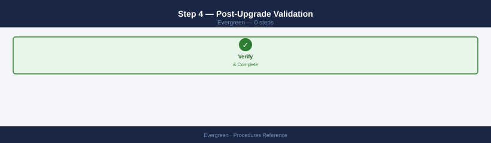
# Confirm the new Purity version is running
purearray list
# Verify 'version' field matches the target version
# Confirm no new alerts appeared during the upgrade
purealert list
# Confirm both controllers are online and running the new version
purearray list --controller
# Confirm all drives are healthy
puredrive list
# Confirm all pods are online and replicating
purepod list
# Confirm all host paths are restored
purehostconnection list
# Confirm capacity figures are unchanged (compare to pre-upgrade baseline)
purearray list --space
diff /tmp/pre-upgrade-space-$(date +%Y%m%d).txt <(purearray list --space)
Name Version Status
pure-array-01.lab.local 6.4.2.0 Optimal
pure-array-02.lab.local 6.4.2.0 Optimal
Severity Code Title Created
warning CRIT-1 Controller 2 temperature elevated 2024-01-15T09:23:45Z
info INFO-5 Upgrade completed successfully 2024-01-15T09:15:12Z
Controller Status Version Model
controller-1 Online 6.4.2.0 FA-405
controller-2 Online 6.4.2.0 FA-405
Drive Status Capacity Used Controller
SSD-001 Healthy 3.84TB 2.1TB controller-1
SSD-002 Healthy 3.84TB 2.3TB controller-1
SSD-003 Healthy 3.84TB 1.9TB controller-2
SSD-004 Healthy 3.84TB 2.2TB controller-2
...
Pod Status Replication Lag
pod-prod-01 Online In-Sync 0ms
pod-prod-02 Online In-Sync 0ms
pod-dr-01 Online In-Sync 12ms
Host Connection Status Paths
host-db-01 iSCSI Online 4/4
host-app-02 FC Online 8/8
Total Capacity Used Available Reduction
50.0TB 32.4TB 17.6TB 18%
Common errors
purearray: command not found — Ensure the Pure Storage CLI tools are installed and the PATH includes the installation directory (typically /opt/purearray/bin).
Error: Unable to connect to array at 192.168.1.100 — Verify network connectivity and that the management IP is reachable; check firewall rules and DNS resolution.
diff: /tmp/pre-upgrade-space-20240115.txt: No such file or directory — Create the baseline file before the upgrade by running purearray list --space > /tmp/pre-upgrade-space-$(date +%Y%m%d).txt beforehand.
Controller Refresh Procedure (Ever Modern)¶
The Ever Modern controller refresh replaces the physical FlashArray controller modules while all I/O continues on the surviving controller. Pure Storage engineers perform the physical swap. The customer's role is readiness validation, maintenance window coordination, and post-upgrade verification.
60 Days Before the Refresh Window¶
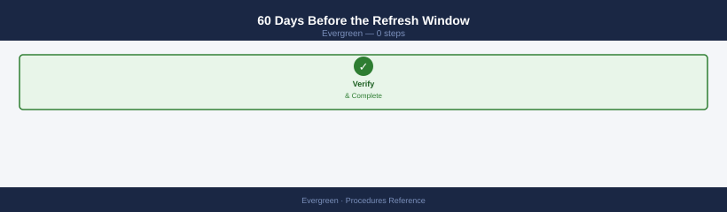
- [ ] Review the subscription dashboard in Pure1 — confirm the controller generation and refresh window deadline
- [ ] Confirm Purity software version is within the supported range for the new controller generation — an upgrade may be required before the controller refresh
- [ ] Identify all hosts connected to the array and confirm multipathing is configured on each
- [ ] Review any change freezes or maintenance blackout periods that could conflict with the Pure-scheduled window
- [ ] Notify the Pure account team of available maintenance windows (minimum 4-hour window required)
7 Days Before the Refresh¶
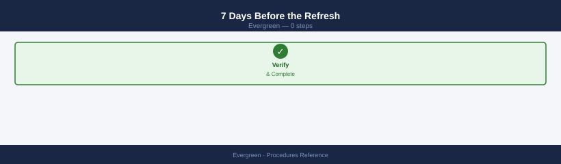
# Full pre-upgrade readiness check
purearray upgrade --check
# Confirm all hosts have redundant paths
purehostconnection list
# Any host with fewer than 2 paths must be remediated before the refresh
# Confirm ActiveCluster mediator is reachable (if configured)
purepod list --mediator
curl -sk https://<mediator-ip>/mediator/version
# Review and clean up excess snapshots
puresnap list --space | head -20
# Eradicate snapshots beyond the retention window to reduce refresh duration
=== Upgrade Readiness Check ===
Array: purearray-01.lab.local
Current Version: 6.4.2
Target Version: 6.4.3
Status: READY
✓ All controllers healthy
✓ Sufficient free space (847 GB available)
✓ No active snapshots in progress
✓ Replication links stable
=== Host Connection Paths ===
Host Paths Status
host-esx01.lab.local 2 Connected
host-esx02.lab.local 2 Connected
host-esx03.lab.local 2 Connected
host-esx04.lab.local 1 WARNING
host-esx05.lab.local 2 Connected
=== ActiveCluster Mediator Status ===
Pod: pod-us-east
Mediator IP: 10.20.50.15
Mediator Status: REACHABLE
{"version": "2.1.4", "status": "active", "uptime_seconds": 2592000}
=== Snapshot Space Usage (Top 20) ===
Snapshot Name Size (GB) Created
db-prod-hourly.2024-01-15.0800 125.4 2024-01-15 08:00:00
db-prod-hourly.2024-01-15.0700 125.2 2024-01-15 07:00:00
db-prod-hourly.2024-01-15.0600 124.9 2024-01-15 06:00:00
backup-weekly.2024-01-08 287.6 2024-01-08 22:30:00
backup-weekly.2024-01-01 289.1 2024-01-01 22:30:00
...
Common errors
Error: Host host-esx04.lab.local has only 1 path — upgrade cannot proceed — Add a second iSCSI or FC path to the host before running the upgrade.
curl: (60) SSL certificate problem: self signed certificate — Add the -k flag to curl or import the mediator's certificate into your system trust store.
Error: Insufficient space for upgrade — 200 GB required, 89 GB available — Eradicate old snapshots using puresnap eradicate <snapshot-name> to free space before retrying the upgrade check.
During the Refresh Window¶
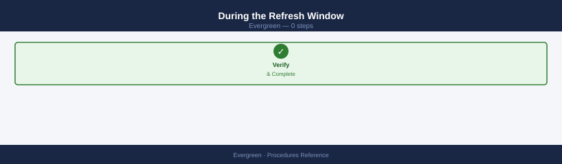
Pure Storage engineers manage the physical replacement. The refresh sequence:
- Pure drains I/O from controller 0 (all I/O shifts to controller 1)
- Pure removes controller 0 hardware and installs the new-generation module
- Controller 0 rejoins the cluster; I/O is redistributed to active-active
- Pure drains I/O from controller 1 (all I/O shifts to new controller 0)
- Pure removes controller 1 hardware and installs the new-generation module
- Controller 1 rejoins the cluster; normal active-active operation resumes
Customer action during the refresh:
# Monitor host I/O on the array from a monitoring tool or watch CLI
# Expect latency spikes during each controller drain/rejoin event (< 30 seconds each)
# Watch multipath from a representative Linux host
watch -n 2 multipath -ll | grep -E "policy|status|active|failed"
Every 2.0s: multipath -ll | grep -E "policy|status|active|failed" Mon Jan 15 14:32:18 2024
mpatha (360001405a1b2c3d4e5f6g7h8i9j0k1l) dm-0 PURE,FlashArray//X
size=10T features='1 queue_if_no_path' hwhandler='1 alua' wp=rw
|-+- policy='service-time 0' prio=50 status=active
| |- 2:0:0:0 sdb 8:16 active ready running
| `- 3:0:0:0 sdc 8:32 active ready running
`-+- policy='service-time 0' prio=10 status=enabled
|- 4:0:0:0 sdd 8:48 active ready running
`- 5:0:0:0 sde 8:64 failed faulty offline
mpathb (360001405a1b2c3d4e5f6g7h8i9j0k1m) dm-1 PURE,FlashArray//X
size=5T features='1 queue_if_no_path' hwhandler='1 alua' wp=rw
|-+- policy='service-time 0' prio=50 status=active
| |- 2:0:1:0 sdf 8:80 active ready running
| `- 3:0:1:0 sdg 8:96 active ready running
`-+- policy='service-time 0' prio=10 status=enabled
|- 4:0:1:0 sdh 8:112 active ready running
`- 5:0:1:0 sdi 8:128 active ready running
Common errors
device-mapper: multipath: ioctl error for add_wwid — Ensure multipathd daemon is running with systemctl start multipathd and multipath.conf is properly configured.
grep: (standard input): No such device or address — The multipath command failed; verify array connectivity and that the host has active Fibre Channel or iSCSI sessions with iscsiadm -m session or fcstat.
Post-Refresh Validation¶
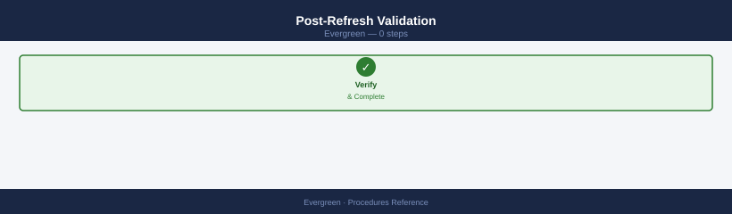
# Confirm both controllers are online and running the new hardware generation
purearray list --controller
# The 'model' or 'type' field should reflect the new controller generation
# Confirm no new alerts
purealert list
# Confirm all drives are healthy
puredrive list
# Confirm all host paths are restored
purehostconnection list
# Confirm all pods are online
purepod list
# Confirm capacity figures are unchanged
purearray list --space
Name Status Model Version
controller-0 Online FA-405R3 6.4.2.1
controller-1 Online FA-405R3 6.4.2.1
AlertID Severity Code Message Time
(no alerts)
Name Status Capacity Used Available
SSD-001 Healthy 3.84TB 1.2TB 2.64TB
SSD-002 Healthy 3.84TB 1.1TB 2.74TB
SSD-003 Healthy 3.84TB 1.3TB 2.54TB
SSD-004 Healthy 3.84TB 1.0TB 2.84TB
...
HostName Status Paths Connected
host-prod-01 Online 4 4
host-prod-02 Online 4 4
host-dev-03 Online 2 2
...
Name Status Replication
pod-primary Online Enabled
pod-secondary Online Enabled
Name Total Used Available Provisioned
array-01 50.0TB 18.5TB 31.5TB 45.2TB
Common errors
purearray: command not found — Verify the Pure Storage CLI tools are installed and the PATH includes the installation directory.
Error: Array unreachable at 192.168.1.100 — Confirm network connectivity to the array management IP and that credentials are valid with pureadmin login.
AlertID 12345: Controller-1 temperature warning — Check controller-1 cooling system and verify fan operation before proceeding with production traffic.
Update CMDB records: Document the new controller generation, the refresh date, and the next scheduled refresh window. Update subscription renewal date tracking if the refresh resets the lifecycle clock.
Capacity Management Procedures¶
Provisioning a New Volume¶
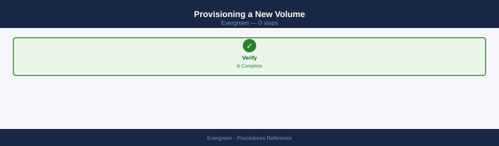
# Create a volume (thin-provisioned; actual space consumed as data is written)
purevol create --size 10T prod-oracle-vol03
# Connect the volume to a host group
purevol connect --hgroup prod-oracle-cluster prod-oracle-vol03
# Verify the volume is connected
purevol list --connection prod-oracle-vol03
# On the host — rescan to discover the new LUN
# Linux:
for host in /sys/class/scsi_host/host*; do echo "- - -" > $host/scan; done
multipathd reconfigure
multipath -ll | grep -A 5 <new_lun_naa>
# VMware:
esxcli storage core adapter rescan --all
esxcli storage nmp device list | grep <new_lun_naa>
Volume prod-oracle-vol03 created
Volume prod-oracle-vol03 connected to prod-oracle-cluster
Name Size Provisioned Connected-to
prod-oracle-vol03 10T 128GB prod-oracle-cluster
- - -
- - -
- - -
mpatha (36001405a1b2c3d4e5f6g7h8i9j0k1l2m) dm-5 PURE,FlashArray//X
size=10T features='1 queue_if_no_path' hwhandler='1 alua' wp=rw
`-+- policy='service-time 0' prio=50 status=active
`- 4:0:0:3 sdd 8:48 active ready running
HBA 0 (vmhba0): Rescan started...
HBA 1 (vmhba1): Rescan started...
Device naa.60001405a1b2c3d4e5f6g7h8i9j0k1l2m: PURE FlashArray//X (naa.60001405a1b2c3d4e5f6g7h8i9j0k1l2m)
Common errors
Error: Host group 'prod-oracle-cluster' not found — Verify the host group exists with purevol list --hgroup and create it if needed using purevol hgroup create.
multipathd: command not found — Install device-mapper-multipath package with apt-get install multipath-tools or yum install device-mapper-multipath depending on your Linux distribution.
Error: LUN not visible after rescan — Ensure the volume connection was successful and check Pure array connectivity by running purevol list --connection to confirm the host group binding.
Expanding an Existing Volume¶
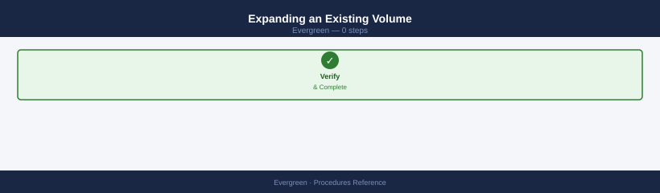
Volume expansion is non-disruptive and online. The host OS must rescan to see the new size after expansion.
# Expand the volume to 20 TiB
purevol setattr --size 20T prod-oracle-vol03
# Verify the new size
purevol list prod-oracle-vol03
# On Linux — rescan the device to pick up the new size
# First, identify the device by its NAA ID from the multipath output
echo "1" > /sys/block/sdb/device/rescan
# Or trigger a multipath resize:
multipathd resize map <device_name>
# On VMware — rescan storage
storage rescan --adapter vmhba0 --type lun
# Then extend the VMFS datastore if required
Volume prod-oracle-vol03 size set to 20T
Name Size Provisioned Used Available
prod-oracle-vol03 20T 20T 18.2T 1.8T
(no output — command completes silently)
mpatha (360001405d1a2b8c9e4f5g6h7i8j9k0l) dm-0 PURE,FlashArray//X
size=20T features='0' hwhandler='1:alua' wp=rw
`-+- policy='service-time 0' prio=50 status=active
|- 2:0:0:1 sdb 8:16 active ready running
|- 3:0:0:1 sdc 8:32 active ready running
(no output — command completes silently)
Common errors
bash: /sys/block/sdb/device/rescan: Permission denied — Run the rescan command with sudo or as root user.
multipathd: can't find device <device_name> in multipath table — Verify the device name matches multipath output exactly (e.g., mpatha) and ensure multipath daemon is running with sudo systemctl status multipathd.
Protection Group Management¶
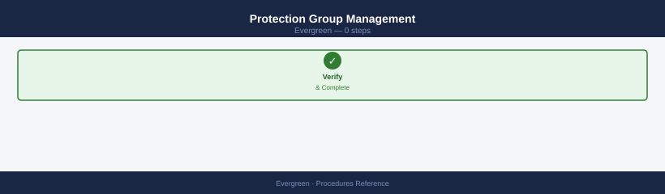
All production volumes should be members of a protection group with replication to the DR site.
# Create a protection group for Oracle
purepgroup create prod-oracle-pg
# Add volumes to the protection group
purepgroup setattr --vollist prod-oracle-vol01,prod-oracle-vol02,prod-oracle-vol03 prod-oracle-pg
# Create a snapshot schedule — every 4 hours, retain 72 hours (18 snapshots)
purepgroup schedule \
--snap-frequency 14400 \
--snap-retention 259200 \
prod-oracle-pg
# Connect the protection group to the remote replication target
purepgroup connect --hgroup remote-lon02 prod-oracle-pg
# Verify replication is active
purepgroup list --replication prod-oracle-pg
Name Enabled Source Targets
prod-oracle-pg true prod-oracle-pg remote-lon02
Volumes added to prod-oracle-pg:
prod-oracle-vol01 (500.0G)
prod-oracle-vol02 (500.0G)
prod-oracle-vol03 (500.0G)
Snapshot schedule configured:
Frequency: 14400 seconds (4 hours)
Retention: 259200 seconds (72 hours)
Max snapshots: 18
Protection group connected to remote target: remote-lon02
Replication Status: Active
Last replicated snapshot: prod-oracle-pg.18 (2024-01-15T09:32:14Z)
Replication lag: 127 seconds
Common errors
Error: Protection group 'prod-oracle-pg' already exists — Use purepgroup list to verify existing groups, or delete with purepgroup destroy prod-oracle-pg before recreating.
Error: Volume 'prod-oracle-vol02' not found or not available — Verify volume names with purevol list and ensure all volumes are provisioned before adding to the protection group.
Error: Remote target 'remote-lon02' is unreachable or not configured — Confirm the remote array is online and replication link is established with purepgroup list --replication.
Subscription Lifecycle Procedures¶
Annual True Forward Review¶
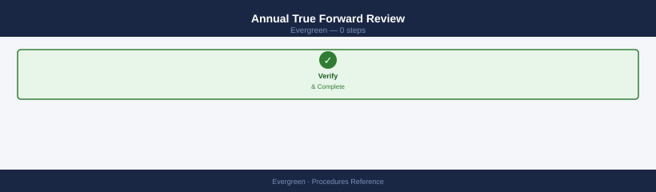
Conduct this review 60 days before the annual True Forward review date.
# Pull current capacity data for the review
purearray list --space > ~/true-forward-capacity-$(date +%Y%m%d).txt
# Identify the largest capacity consumers
purevol list --space | sort -k 2 -rh | head -20 >> ~/true-forward-capacity-$(date +%Y%m%d).txt
# Snapshot space consumption
puresnap list --space | sort -k 3 -rh | head -20 >> ~/true-forward-capacity-$(date +%Y%m%d).txt
Array Name Capacity(GB) Used(GB) Available(GB)
pure-sfo-01 102400 87654 14746
pure-sfo-02 51200 45123 6077
pure-lax-01 204800 198765 6035
Volume Name Used(GB) Provisioned(GB)
prod-db-primary-01 45678 50000
prod-db-replica-02 34521 40000
backup-archive-tier-03 28945 30000
dev-analytics-vol-04 12456 15000
test-sandbox-ephemeral-05 8234 10000
...
Snapshot Name Used(GB) Created
prod-db-primary-01.snap.20250115 8765 2025-01-15T09:23:14Z
backup-archive-tier-03.snap.20250114 6543 2025-01-14T22:15:08Z
prod-db-replica-02.snap.20250115 4321 2025-01-15T03:45:22Z
dev-analytics-vol-04.snap.20250113 2156 2025-01-13T18:30:45Z
...
Common errors
purearray: command not found — Verify the Pure Storage CLI is installed and the PATH includes the Pure bin directory, or source the Pure environment setup script.
Error: Array connection failed - unable to authenticate — Ensure PURE_APITOKEN environment variable is set and the array hostname is reachable via network.
Permission denied: ~/true-forward-capacity-*.txt — Check that your user has write permissions to the home directory or specify an alternative writable path.
Prepare the following for the True Forward meeting with the Pure account team:
| Data Point | Source |
|---|---|
| Current used capacity (TiB) | purearray list --space |
| Current data reduction ratio | purearray list --space |
| 12-month capacity growth trend | Pure1 > Capacity > Trend graph |
| Projected capacity requirement for next 12 months | Calculated from trend + planned workloads |
| Contracted data reduction guarantee | Contract or Pure1 subscription dashboard |
| Current vs. contracted ratio | Compare above two |
If the current data reduction ratio is below the contracted guarantee, document this clearly and raise it with the Pure account team — Pure should provide additional capacity at no charge for the shortfall period.
Subscription Renewal Preparation¶
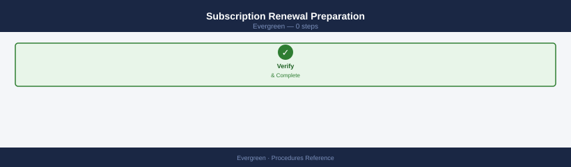
Begin renewal preparation 90 days before the current term expires:
- [ ] Review current committed capacity vs. actual usage trend in Pure1
- [ ] Review controller generation and whether an Ever Modern refresh is included in the renewal
- [ ] Confirm the contracted data reduction guarantee is still appropriate for the current workload mix
- [ ] Prepare a 2–3 year capacity growth projection for renewal negotiations
- [ ] Confirm the renewal includes all required Purity features (e.g., ActiveCluster, SafeMode) that are currently licensed
- [ ] Schedule a renewal discussion with the Pure CSM and account executive
Post-Change Validation¶
Run after any configuration change, upgrade, or maintenance window:
# Health summary
purearray list
purearray list --controller
purearray list --hardware
# Alert check — confirm no new alerts
purealert list
# Drive health
puredrive list
# Replication
purepod list
purepod list --replicating
# Host paths
purehostconnection list
# Capacity — compare to pre-change baseline
purearray list --space
Name Version Status
pure-array-prod-01 6.4.2.1 Healthy
pure-array-prod-02 6.4.2.1 Healthy
Controller Status Model
CT0.FAStT-prod-01 Online FA-m70
CT1.FAStT-prod-01 Online FA-m70
Hardware Status Temperature
PSU-0 OK Normal
PSU-1 OK Normal
Fan-0 OK Normal
Fan-1 OK Normal
...
AlertId Severity Message Created
(no alerts)
Name Status Capacity(GB)
SSD-0-0 Healthy 3814.7
SSD-0-1 Healthy 3814.7
SSD-1-0 Healthy 3814.7
...
Name Status Arrays
prod-pod-01 Synced 2
prod-pod-02 Synced 2
Name Direction Status
prod-pod-01→prod-pod-02 Outbound Active
prod-pod-02→prod-pod-01 Inbound Active
Host Connection Status
host-db-01 iSCSI Connected
host-db-02 iSCSI Connected
host-app-03 FC Connected
Name Used(GB) Available(GB) Capacity(GB)
pure-array-prod-01 4821.3 8156.2 12977.5
pure-array-prod-02 4756.1 8201.4 12977.5
Common errors
purearray: command not found — Ensure the Pure Storage CLI tools are installed and the PATH includes the Pure bin directory (e.g., export PATH=$PATH:/opt/purearray/bin).
Authentication failed: Invalid credentials — Verify your Pure array credentials are set via environment variables or config file (e.g., export PURE_API_TOKEN=<token>).
Connection refused: Unable to reach array at <ip> — Confirm network connectivity to the array management IP and that the array is online with ping <array-mgmt-ip>.
Application-layer validation:
- [ ] Confirm production workload I/O is normal — check application response times and error logs
- [ ] Test connectivity from at least one representative host per protocol (FC, iSCSI, NVMe)
- [ ] Confirm snapshot schedules are running —
puresnap listshows recent snapshots for key protection groups - [ ] Confirm replication is active and lag is within RPO —
purepod list --replicating - [ ] Update the change management ticket with post-change validation results and close the window
Document the change completion time, the engineer who performed it, and any deviations from the planned procedure in the CMDB record for the array.
Submit a Non-Disruptive Controller Upgrade Request¶
When an Evergreen//Forever entitlement includes a controller upgrade, the request is raised through Pure Support. Pure performs the upgrade without requiring downtime on the storage side.
- Log in to Pure1 and navigate to Support → Cases → New Case
- Enter the subject as "Evergreen Controller Upgrade" and describe the array serial number and target controller generation
- Pure Support schedules the upgrade window and confirms compatibility with the current Purity version
- During the upgrade window, Pure engineers perform the non-disruptive controller swap following the rolling replacement sequence
- After the upgrade, verify the new controller generation is active:
# Confirm both controllers are online with the new hardware generation
purearray list --controllers
# The 'type' or 'model' field should reflect the updated controller generation
Name Status Model Version Mode
controller0 Online FA-m70 6.4.2.1234 Active
controller1 Online FA-m70 6.4.2.1234 Passive
Common errors
Error: Array connection failed — Verify network connectivity to the array management IP and confirm firewall rules allow access to port 443.
Error: Invalid credentials — Re-authenticate using purearray login with valid administrative credentials before running list commands.
Confirm no new alerts appeared after the refresh and that all host paths are fully restored before closing the change record.
Track Hardware Refresh Timeline¶
Evergreen//Forever entitlement includes scheduled hardware refreshes. Use Pure1 to track the refresh window and plan accordingly.
- Log in to Pure1 and navigate to My Fleet → select array
- Select the Hardware tab and note the current controller and shelf generation
- Cross-reference the controller generation with the Evergreen//Forever entitlement terms to identify the refresh window deadline
- If the refresh window is within 90 days, notify the Pure account team to confirm the scheduled date and any pre-requisites (Purity version compatibility, maintenance blackouts)
- Update the CMDB record with the controller generation, the refresh window deadline, and the planned refresh date
Ensure Purity is at a supported version for the target controller generation before the refresh window arrives. Pure will specify the required upgrade path if a Purity upgrade is needed before the hardware refresh.
Confirm Purity Upgrade Eligibility¶
Before scheduling a Purity upgrade, confirm the array is eligible and that the target version is appropriate for the current hardware and workload.
- Log in to Pure1 and navigate to Software → select array
- Review the Available Upgrades list — Pure1 shows only versions compatible with the current controller and Purity release line
- Run the Upgrade Advisor: Pure1 evaluates array health, snapshot count, ActiveCluster pod state, and host path counts and flags any blockers
- Review all Upgrade Advisor findings and resolve any blockers before scheduling
- Schedule the upgrade via Pure1 or initiate via CLI with Pure Support engaged:
# Initiate Purity upgrade to a specific target version
purearray upgrade --version <target>
# Pure Support must be engaged before running this command in production
Upgrade initiated for array: purearray-prod-01.dc1.internal
Current version: 6.2.4
Target version: 6.3.1
Estimated upgrade time: 45 minutes
Pre-flight checks: PASSED
- Sufficient free space: 127 GB available
- No active snapshots blocking upgrade: OK
- Replication links healthy: OK
- All controllers online: 2/2
Upgrade job ID: upgrade-20240115-4a7f9c2e
Status: PENDING
Next step: Review upgrade window and confirm to proceed
Common errors
Error: Target version 6.3.1 not available for this array model — Verify the target version is compatible with your Pure array model using purearray list-versions.
Error: Upgrade cannot proceed - active snapshots detected on 3 volumes — Delete or complete all active snapshots before upgrade using purearray snapshot list and purearray snapshot delete.
Error: Replication link to secondary array is unhealthy — Verify network connectivity and replication status with purearray replication status before retrying the upgrade.
Confirm the upgrade readiness check passes without blockers before setting the maintenance window: purearray upgrade --check.
Verify¶
purearray upgrade --checkreturns no blocking issues before running the upgrade- After upgrade:
purearray get --versionreturns the expected target version - Array health:
purehw listandpuredrive listshow no failed components - Performance metrics are within baseline 30 minutes after the upgrade completes